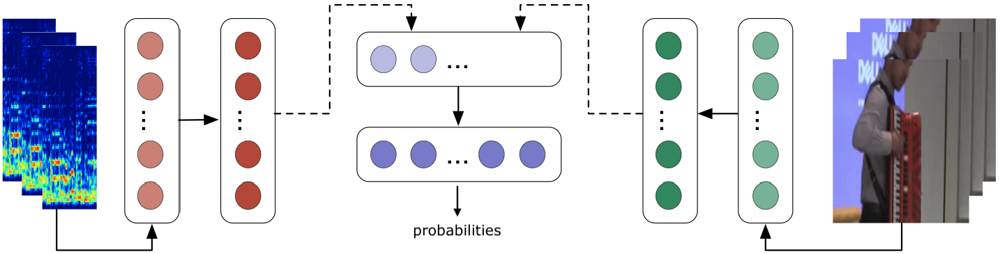

Audio-Visual Deep Learning Methods for
Musical Instrument Classification
and Separation
PhD candidate: Olga Slizovskaia
Supervisors:
Dr. Emilia GómezJoint Research Centre, EC
Music Technology Group, UPF
Dr. Gloria Haro Image Processing Group, UPF
Committee:
Dr. Xavier Giró-i-NietoUniversitat Politècnica de Catalunya
Dr. Xavier SerraUniversitat Pompeu Fabra
Dr. EstefanÁa CanoAgency for Science, Research and Technology,
A*STAR, Singapore
21/10/2020
Outline
I - Audio-Visual MIR
II - Audio-Visual Musical Instrument Classification
III - Audio-Visual Source Separation
IV - Conclusion
I - Audio-Visual MIR
Why do we study Audio-Visual MIR?
- Music is multimodal, we aim for better understanding and analysis
- Humans are very good at merging different sources of information
- Yet, ML algorithms are not as good as humans at multi-sensory merging
- Various practical applications (alignment, transcription, separation, localization, tagging etc.)
What are the challenges in Audio-Visual MIR?
- Shortage of dedicated datasets
- Low quality of available data, large diversity in data
- Dimensionality mismatch problem
- Data aggregation problem
- Extra: limited computing power
Research goals
Research focus (I/II)
- Where can we merge different data representations?
Early fusion
- Where can we merge different data representations?
Late fusion
- Where can we merge different data representations?
Hybrid fusion

- Where can we merge different data representations?
Research focus (II/II)
- How should we merge data from different sources?
Concatenation (additive conditioning)
Multiplicative conditioning
Feature-wise Linear Modulation
II - Audio-Visual Musical Instrument Classification
Problem definition
Formal problem definition
- set of objects $ \definecolor{signal}{RGB}{18,110,213} {\color{signal} X} \subset \mathbb{R}^N$, samples $ {\definecolor{signal}{RGB}{18,110,213} \color{signal}x}=({\color{signal} x_1, x_2, ..., x_N}) \in {\color{signal}X}$
- set of class labels $\definecolor{categories}{RGB}{203,23,206} {\color{categories}C} \subset \{0,1\}^{\color{categories}K}$
- final subset of labels $ \definecolor{classes}{RGB}{114,0,172} \definecolor{categories}{RGB}{203,23,206} {\color{classes} y } = ({\color{classes}y_1, y_2, ..., y_K}) \in {\color{categories} C }$ for a sample $ \definecolor{signal}{RGB}{18,110,213} \color{signal} x$
\[
\begin{aligned}
\definecolor{classes}{RGB}{114,0,172}
\definecolor{params}{RGB}{45,177,93}
\definecolor{model}{RGB}{251,0,29}
\definecolor{signal}{RGB}{18,110,213}
\definecolor{probability}{RGB}{217,86,16}
\definecolor{categories}{RGB}{203,23,206}
{\color{probability} \hat{y}} = {\color{model} f}_{\color{params} \theta}({\color{signal} x})
\end{aligned}
\]
find parameters
for a model that gives
class
estimation probabilities
for a sample
\[ \definecolor{loss}{RGB}{128,121,14} \definecolor{classes}{RGB}{114,0,172} \definecolor{probability}{RGB}{217,86,16} \definecolor{categories}{RGB}{203,23,206} { \color{loss} \mathcal{L} } ( {\color{classes} y}, {\color{probability} \hat{y}}) = -{\color{loss} \sum}_{\color{categories} i=1}^{\color{categories} K} {\color{classes}y_i} {\color{loss} * \log}( {\color{probability} \hat{y}_i }) \] for multi-labels classification, minimize categorical cross-entropy between ground truth and estimated probability distributions of class labels
First multimodal approach
- Hybrid/Late fusion
- Concatenation
Audio input Video input
Audio-based CNN Video-based CNN
First multimodal approach
- MelSpec audio representation
- Architectures
- Han et al., 1.5M params
- Choi et al., 2.4M params
- Xception, 9.6M params
- Bag-of-frames RGB
- Inception V3
- Number of frames: 10-100
- FCVID: 20-100
- YouTube-8M: 10-20
- Fine-tune or train from scratch
DATASETS
- FCVID: Musical Performance With Instruments
12 classes, 5K videos, 260 hours- YouTube-8M: MusInstr-Normalized
46 classes, 60k videos, 4k hours
Summary of contributions
- Proposed a new multimodal network for musical instrument classification
- Demonstrated efficiency of the audio-visual approach
- Shown that multi-modal fusion is beneficial overall
- Concatenation might not be enough for controversial inputs
III - Audio-Visual Source Separation
Can you hear the difference?
Sample 1
Sample 2
Sample 3
Can you hear the difference now?
| Separated 1 | Separated 2 | Separated 3 |
|---|---|---|
 |
 |
 |
Problem definition
Formal problem definition
- a mono mixture time-domain signal $\definecolor{mix}{RGB}{18,110,213} \color{mix} y(t)$
- individual sources $ \definecolor{gt}{RGB}{203,23,206} \color{gt} x_i(t)$
\[ \definecolor{loss}{RGB}{128,121,14} \definecolor{predicted}{RGB}{217,86,16} \definecolor{gt}{RGB}{203,23,206} \definecolor{nsources}{RGB}{114,0,172} \definecolor{sum}{RGB}{251,0,29} \definecolor{mix}{RGB}{18,110,213} {\color{mix} y(t)} = {\color{sum} \sum_{\color{nsources}i=1}^{\color{nsources}N} {\color{gt} x_i(t)}} \] the mixture equals to the sum of all sources
\[
\definecolor{loss}{RGB}{128,121,14}
\definecolor{predicted}{RGB}{217,86,16}
\definecolor{nsources}{RGB}{114,0,172}
\definecolor{model}{RGB}{251,0,29}
\definecolor{gt}{RGB}{203,23,206}
\definecolor{mix}{RGB}{18,110,213}
\definecolor{param}{RGB}{45,177,93}
{\color{predicted} \hat{x}_{\color{nsources}i}(t)} =
{\color{model}f_{\color{params}\theta}^{\color{nsources}i}}({\color{mix}y(t)})
\]
find parameters
for a model that gives
individual
sources estimation
from the mixture
Formal problem definition
approaches to estimate individual sources from the mixture
direct waveform estimation
predicting time-domain signals $ \definecolor{nsources}{RGB}{114,0,172} \definecolor{predicted}{RGB}{217,86,16} \color{predicted} \hat{x}_{\color{nsources}i}(t)$
\[ \definecolor{nsources}{RGB}{114,0,172} \definecolor{loss}{RGB}{128,121,14} \definecolor{predicted}{RGB}{217,86,16} \definecolor{gt}{RGB}{203,23,206} {\color{loss} \mathcal{L}^{w} {\color{black}=} \sum_{\color{nsources}i=1}^{\color{nsources}N} \sum_{j=1}^{T} ({\color{gt} x_{\color{nsources}i}(j)} - {\color{predicted} \hat{x}_{\color{nsources}i}(j)})^2} \]
masking-based approach
predicting ratio masks $ \definecolor{nsources}{RGB}{114,0,172} \definecolor{predicted}{RGB}{217,86,16} \color{predicted} \hat{M}_{\color{nsources}i}^{r} $
$ \definecolor{mix}{RGB}{18,110,213} \color{mix} \boldsymbol{Y} $, $ \definecolor{gt}{RGB}{203,23,206} \definecolor{nsources}{RGB}{114,0,172} \color{gt} \boldsymbol{X_{\color{nsources} i}} $ STFT values of the mixture and sources
magnitude of the STFT value at frequency $\nu$ and time $\tau$
$\definecolor{gt}{RGB}{203,23,206}
\definecolor{nsources}{RGB}{114,0,172}
| {\color{gt} \boldsymbol{X_{\color{nsources}i}}(\tau, \nu) } |$,
$\definecolor{mix}{RGB}{18,110,213}
| {\color{mix} \boldsymbol{Y}(\tau, \nu)}|$
ideal ratio mask of source $\definecolor{gt}{RGB}{203,23,206} \definecolor{nsources}{RGB}{114,0,172} | {\color{gt} \boldsymbol{X_{\color{nsources}i}}(\tau, \nu) } |$ \[ \definecolor{gt}{RGB}{203,23,206} \definecolor{nsources}{RGB}{114,0,172} \definecolor{mix}{RGB}{18,110,213} \definecolor{predicted}{RGB}{217,86,16} {\color{predicted} \hat{M}_{\color{nsources}i}^{r}} = \frac{|{\color{gt} \boldsymbol{X_{\color{nsources}i}}(\tau, \nu) } |}{|{\color{mix} \boldsymbol{Y}(\tau, \nu)}|} \]
\[ \definecolor{loss}{RGB}{128,121,14} \definecolor{nsources}{RGB}{114,0,172} \definecolor{predicted}{RGB}{217,86,16} \definecolor{gt}{RGB}{203,23,206} {\color{loss} \mathcal{L}^{r} {\color{black}=} \sum_{\color{nsources}i=1}^{\color{nsources}N} \sum_{j=1}^{|(\tau, \nu)|} ({\color{gt} M_{\color{nsources}i}^{ir}(j)} - {\color{predicted} \hat{M}_{\color{nsources}i}^{r}(j)})^2} \]
Metrics
- Source to Distortion Ratio (SDR)
- Source to Inferences Ratio (SIR)
- Sources to Artifacts Ratio (SAR)
- Scale-Independent Source to Distortion Ratio (SI-SIR)
- Scale-Dependent Source to Distortion Ratio (SD-SIR)
- Predicted Energy at Silence (PES)
Known challenges
- Same-family instruments are similar to one another
- Unknown in advance number of sources
- Complexity increases with the number of sources
- Overlap in time and frequency between sources
💪 Can we use extra information to improve separation?
Preliminary study
- Multi-instrument Source Separation in Time Domain
- Hybrid fusion
- Multiplicative Conditioning on Instrument Labels
Conditioned Wave-U-Net Architecture

Conditioned Wave-U-Net Architecture

Conditioned Wave-U-Net Architecture

Conditioned Wave-U-Net Architecture

Experiments
URMP Dataset
- 13 instruments
- 44 videos -> 40 valid pieces
- 12 duest, 20 trios, 8 quartets
- 87 unique audio tracks
- Train/Test split: 30/10 pieces
Video Demo: Trained on 30 videos
Summary of results
| Method | SDR | SIR | SAR |
|---|---|---|---|
| InformedNMF | -0.16 | 1.42 | 9.31 |
| Exp-Wave-U-Net | -4.12 | -3.06 | 12.18 |
| CExp-Wave-U-Net | -1.37 | 2.16 | 6.36 |
Summary of results

Summary of results
Take away note: it was inspiring but we lacked TPUs and scaling was not an option
Ablation and Speedup
Learning rate
TPUs
tf.float32 vs tf.float16
Total Speedup: x35.4
What we did next...
SOLOS
- 13 instruments matching the URMP dataset
- Only solo performances / auditions
- Semi-automatic and manual quality control
- Mix-and-separate approach
- 755 individual recordings
- Extra: valid timestamps and skeletons
Conditioned Wave-U-Net Architecture
Design Decisions
Conditioned Wave-U-Net Architecture
Design Decisions
Conditioned Wave-U-Net Architecture
Design Decisions
Conditioned Wave-U-Net Architecture
Design Decisions
Context vectors
Label conditioning
Visual conditioning
Visual-motion conditioning
Design Decisions
Conditioning Design
FiLM conditioning
Multiplicative conditioning
Results: Video Demo
Summary of results
Summary of results
IV - Conclusion
Contributions
modern and efficient audio-visual methods for MIR
- for MIR → classification, separation
- methods → data fusion, conditioning
- audio-visual → datasets (YouTube8m-MusInst, Solos)
- modern and efficient → deep learning
Research focus
Where can we merge different data representations?
How should we merge data from different sources?
Publications
Audio-Visual MIR
- O. Slizovskaia, E. Gómez, and G. Haro. (SMC, 2016) Automatic musical instrument recognition in audiovisual recordings by combining image and audio classification strategies.
https://github.com/Veleslavia/SMC2016 - O. Slizovskaia, E. Gómez, and G. Haro. (ACM ICMR, 2017) Musical instrument recognition in user-generated videos using a multimodal convolutional neural network architecture.
https://github.com/Veleslavia/ICMR2017 - O. Slizovskaia, E. Gómez, and G. Haro. (ISMIR-LBD, 2017) Correspondence between audio and visual deep models for musical instrument detection in video recordings.
- O. Slizovskaia, E. Gómez, and G. Haro. (ICML-ML4M, 2018) A Case Study of Deep-Learned Activations via Hand-Crafted Audio Features.
- O. Slizovskaia, L. Kim, E. Gómez, and G. Haro. (ICASSP, 2019) End-to-end sound source separation conditioned on instrument labels.
https://github.com/Veleslavia/vimss - J.F. Montesinos, O. Slizovskaia, and G. Haro. (IEEE MMSP, 2020) Solos: A Dataset for Audio-Visual Music Analysis.
https://github.com/JuanFMontesinos/Solos - O. Slizovskaia, G. Haro and E. Gómez. (IEEE/ACM TASLP, 2020) Conditioned Source Separation for Musical Instrument Performances (under review after major changes).
https://github.com/Veleslavia/conditioned-u-net
Collaborations
- J. Pons, O. Slizovskaia, R. Gong, E Gómez, X. Serra. (EUSIPCO, 2017) Timbre analysis of music audio signals with convolutional neural networks.
https://github.com/Veleslavia/EUSIPCO2017 - E. Fonseca, R. Gong, D. Bogdanov, O. Slizovskaia, E. Gómez, X. Serra. (DCASE, 2017) Acoustic scene classification by ensembling gradient boosting machine and convolutional neural networks.
- R. Gong, E. Fonseca, D. Bogdanov, O. Slizovskaia, E. Gómez, X. Serra. (DCASE, 2017) Acoustic scene classification by fusing LightGBM and VGG-net multichannel predictions.
- J. Serrà , D. Álvarez, V. Gómez, O. Slizovskaia, J.F. Núñez, and J. Luque. (ICLR, 2020) Input complexity and out-of-distribution detection with likelihood-based generative models.
- D. Michelsanti, O. Slizovskaia, G. Haro, E. Gómez, Z.H. Tan, and J. Jensen. (INTERSPEECH, 2020) Vocoder-Based Speech Synthesis from Silent Videos.